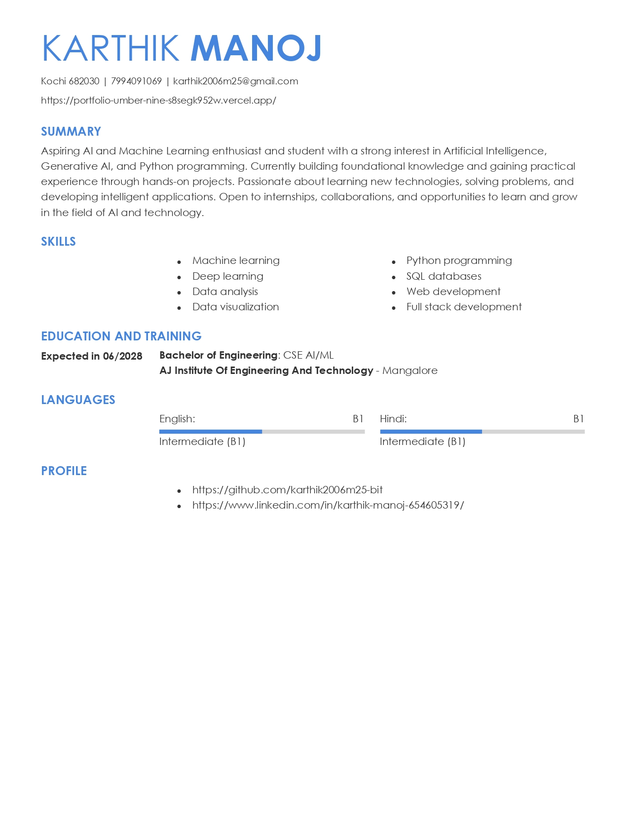

Machine learning experiments
Using Python and beginner-friendly ML tools to understand data, patterns, and prediction.
resume / 2026
Aspiring AI & Machine Learning enthusiast
and student.
I build my understanding of intelligent technology through hands-on projects, practical experiments, and a constant curiosity to learn more.
↓profile
I am an aspiring AI and Machine Learning enthusiast and student with a strong interest in Artificial Intelligence, Generative AI, and Python programming.
Currently building foundational knowledge and gaining practical experience through hands-on projects. I enjoy learning new technologies, solving problems, and developing intelligent applications that turn ideas into something useful.
Looking for internships, collaborations, and opportunities to learn and grow in AI and technology.
capabilities
practical experience
Using Python and beginner-friendly ML tools to understand data, patterns, and prediction.
Experimenting with prompts, language models, and ways to make AI applications more helpful.
Cleaning, exploring, and asking better questions of datasets through practical work.
my resume

View my full resume to learn more about my education, skills, and experience.
next step